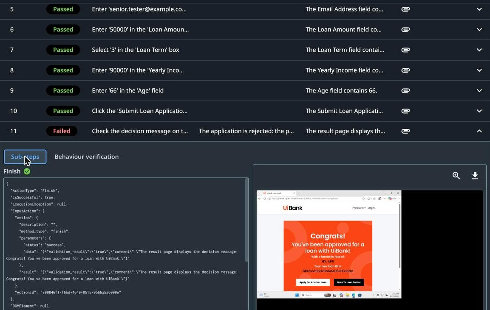
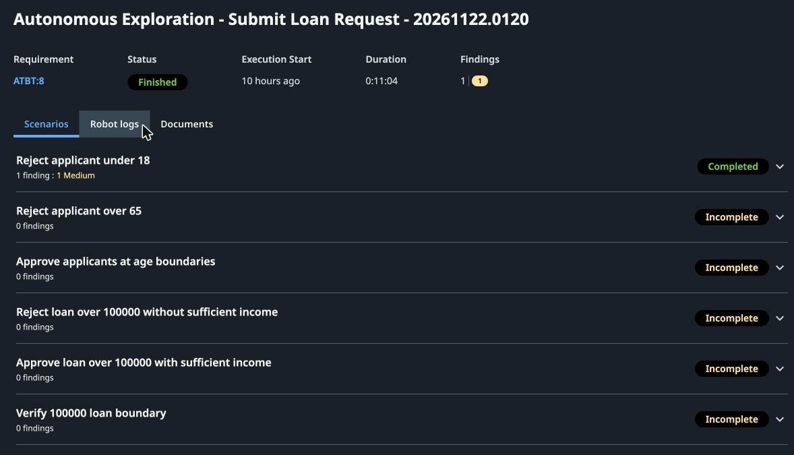

5. Compare the Runs¶
Why it matters for you: AI testers leave a lot of evidence, but you still decide whether to trust it. Reading the three runs side by side shows you what a good step looks like: one that a colleague, Delegate and a robot all follow the same way.
Over lunch, the shared robot worked through the queue. Now you read what Autopilot did with your Submit Over-65 Request test case and compare it with your own run and Delegate's.
Read the robot's run¶
-
Go to Execution and open the run of Submit Over-65 Request that you started with Run autonomously in step 4.
The robot's run shows the type Autonomous, and its name is Submit Over-65 Request - followed by the date and time. Skip the run whose name starts with Delegate- and the one with your own comment. The robot's run has a Tester comment that Autopilot wrote and a screenshot under every step.
Not finished yet?
If your run is still waiting or running, don't start another one. Your trainer has a completed robot run of Submit Over-65 Request in the trainer's demo project: read that one instead, on your screen or on the projector. Come back to yours at the end of the day.
If your run ended with an error before it reached the age decision, the problem is the robot or the service, not UiBank. A typical sign: the run took about a minute, step 1 is Failed, the other steps show None, and expanding step 1 may show "Verification could not be completed (HttpRequestException)" under Behaviour verification. Check the test case's Manual Steps → URL field for a broken address (it must be exactly
https://uibank.uipath.com) and fix it. Ask your trainer before you start another run – each run costs App Test Platform Units – and use the trainer's run. -
The result page has the tabs Logs, Robot Logs, Execution details and Affected requirements. On the Logs tab, each step shows its result, the description and expected behaviour from your test case, a Tester comment that Autopilot wrote, and an attachment.
-
Expand a step (Show execution trace):
✅ Sub-steps – what Autopilot did in the browser, with a screenshot of each action. You can zoom in or download it.
✅ Behaviour verification – how Autopilot checked the expected behaviour, and what it found.
-
Open the Robot Logs tab. This is the execution log, with the columns Level, Time, Message and Info. It first lists the setup (package, process, robot), then Autopilot's reasoning for each step – how it found a field, what it typed, and how it compared the result with what you expected. The robot works in Microsoft Edge.
-
Find the age decision step. It's Failed: Autopilot's comment reads like The result page displays the decision message: Congrats! You've been approved for a loan with UiBank!, and the screenshot shows the approval page – where your test case expects a rejection. If the run stopped before it, read the trainer's run instead (see the box above).

Preview
Run autonomously is a Preview feature. Labels and behavior may change. Your tenant may show slightly different labels.
See Reviewing Autonomous Test Execution results.
Compare the three runs¶
Copy this table into your notes and fill in the last row. The other rows are already filled in for you.
| You (Execute Manually) | Delegate | Robot (Run autonomously) | |
|---|---|---|---|
| Who did the steps | You, in your browser | Delegate, on your computer | Autopilot, on the trainer's shared robot |
| Evidence | Pass or fail per step, your comment, your screenshot | Result per step, a trace per step, a final screenshot | Result per step, screenshots of every action, its own comments, its reasoning |
| Time | About 10 minutes of your time | About 10 minutes, with your computer busy | About 6 minutes on the robot, plus the wait in the queue |
| Cost | Your time | Your AI usage allowance | App Test Platform Units, from the tenant |
| Result at the age decision | Failed | Failed | Failed |
| Where it hesitated or stumbled | your notes | your notes | your notes |
The table's main point: the same test case gave the same verdict three times. The defect is in UiBank, not in the tester.
Robot runs have their own type in reports
A run started with Run autonomously shows the type Autonomous, not Manual. Keep this in mind in 8. Read the Results: autonomous runs are counted separately from people's manual runs.
Cost details: Delegate and Autopilot chat use your monthly AI usage allowance, see Autopilot usage pool for testing. Run autonomously uses the tenant's App Test Platform Units, see Autonomous Test Execution.
Make one step agent-proof¶
A person fills gaps from experience. An agent follows the words. Look at your notes and the robot's reasoning, and find one step that made Delegate or Autopilot hesitate, or that could be read two ways.
These patterns usually cause trouble:
| Unclear step | Why an agent struggles | Better |
|---|---|---|
| Enter the applicant's details and submit | Several actions in one step; no data | Type 66 in the Age field (one action per step) |
| Click the button | Which button? | Select Submit (the label exactly as UiBank shows it) |
| Check the result | No expected result to compare with | Expected behaviour: The page shows "Sorry, at this time you have not been approved for a loan." |
- Open Submit Over-65 Request → Manual Steps.
- Rewrite the step you picked: one action, the UI label exactly as UiBank shows it, and an expected result with exact text. Changes save automatically.
Prefer to ask Delegate?
Replace the placeholders as in step 4, then paste:
Rewrite the steps of test case <TEST_CASE_KEY> in Test Manager project <PROJECT_PREFIX> that were unclear during this run, so each one has a single clear action and expected result. Show me the changes before you save them to Test Manager.
Keep the expected rejection
Don't change what the test case expects at the age decision. The requirement says over-65 applicants must be rejected. If you change the expected result to match UiBank, the test stops catching the defect.
Watch: Autonomous Exploration (Preview)¶
Trainer
Autonomous Exploration doesn't need a test case. You give Autopilot a requirement, a web address and a time limit. It learns the app, plans test scenarios, runs as many as it can and reports what it found. Your trainer shows it, because it runs on the same shared robot.
Preview
Autonomous Exploration is a Preview feature, on Windows robots only. Labels and behavior may change. Your tenant may show slightly different labels.
What the trainer does:
- Opens the Submit Loan Request requirement and selects + Autonomous Exploration.
-
In the Autonomous Exploration (Preview) panel, fills in:
✅ Instructions for Autopilot (optional), typed or picked with Prompt. A narrow one works best, for example "Only test the over-65 age rule."
✅ Test URL, the UiBank address.
✅ Timebox (minutes), for example 10.
✅ Model, and Enable live streaming so the class can watch.
-
Selects Next, checks Select folder, Runtime type, Robot account and Machine template as in step 4, and selects Start Autonomous Exploration.
- While it runs, the trainer can pause and guide Autopilot with a typed hint.
- Then the trainer opens a run made earlier, because 10 minutes covers only about one scenario. The report has three tabs: Scenarios, Robot logs and Documents.

What you look for in the report:
✅ How many scenarios Autopilot planned, and how many it completed. In one 10-minute run before the workshop, it planned 13 scenarios and completed one: an under-18 rejection, with a finding about the age message.
✅ Each finding's category (functional or UX), its severity, what Autopilot expected and what it saw, and its steps to reproduce.
✅ Whether a scenario covers the over-65 rule, and whether it was completed.
Discuss: would you add a finding to your test cases, report it as a defect, or ignore it? Exploration finds things nobody wrote a test case for. Your test cases prove the rules you agreed on. You need both.
Go further – turn a finding into a test case
Pick one finding from the report. Create a manual test case for it on Submit Loan Request, using the finding's steps to reproduce as your steps, and the requirement's rule as the expected result.
See Running Autonomous Exploration and Reviewing Autonomous Exploration results.
Check it
✅ All three runs of Submit Over-65 Request (yours, Delegate's and the robot's, or the trainer's robot run) are Failed at the age decision, with evidence.
✅ Your comparison table is filled in.
✅ You can name one step wording that would confuse an agent, and you've rewritten it.
Nice work!¶
You judged AI evidence as a tester would: three testers, one verdict, one UiBank defect. Next, you see how the same test case becomes an automation that runs in seconds.
Next → 6. Automate with Studio Web